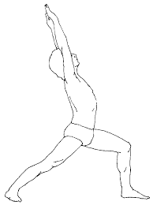

आसन > वीरभद्रासन :

-
वीरभद्रासन, जिसे "Warrior Pose" भी कहा जाता है, शारीरिक शक्ति, स्थिरता और सहनशक्ति को बढ़ाने के
लिए एक महत्वपूर्ण योगासन है।
वीरभद्रासन करने की विधि :
- आरंभिक स्थिति: ताड़ासन में खड़े हो जाएं।
- दाहिने पैर को आगे बढ़ाएं: दाहिने पैर को लगभग 90 डिग्री तक मोड़ें और बाएं पैर को पीछे की
ओर सीधा रखें।
- हाथों की स्थिति: दोनों हाथों को कंधे की ऊंचाई पर फैलाएं और हथेलियों को नीचे की ओर रखें।
- ध्यान केंद्रित करना: दाहिनी ओर देखें और कुछ समय तक इस स्थिति में रहें।
- समापन: धीरे-धीरे वापस आएं और दूसरी ओर से भी यही प्रक्रिया दोहराएं।
लाभ :
- वीरभद्रासन शरीर को मजबूत और लचीला बनाता है।
- यह संतुलन और एकाग्रता को सुधारने में मदद करता है।
Move to top